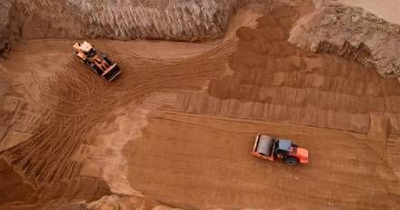
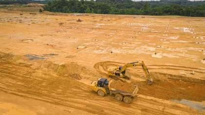
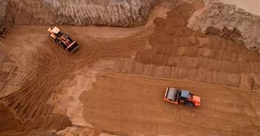
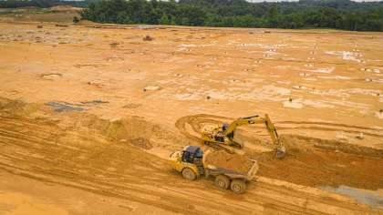

Overview
Earthwork is the foundation of any civil engineering project. At Syed Constructions, we provide comprehensive excavation and land development services for residential, commercial, and public sector projects. Our focus is on achieving precise levels, slope control, and stable soil preparation.
Scope of Work
1. Site Clearance
Removal of vegetation, debris, and structures from the site. Topsoil is stripped and preserved if needed for landscaping or reuse.
2. Excavation and Cutting
We carry out mechanical and manual excavation for foundations, basements, trenches, and drains. Soil is removed as per drawings and disposed of safely or reused on-site.
3. Filling and Backfilling
Filling material is placed in layers and compacted using rollers or rammers. Earth, gravel, moorum, or sand is used based on specifications. Backfilling is done around foundations, walls, and trenches.
4. Leveling and Grading
We grade plots, roads, and embankments to achieve the desired slope and elevation. Laser leveling and dozers ensure accuracy for roadbeds, drainage systems, and platforms.
5. Compaction
Proper compaction improves soil bearing capacity. Watering and rolling are done using tandem rollers or plate compactors depending on soil type and project size.
6. Trench Work
Trenching for utility lines (sewer, water, electrical) is done safely with trench boxes and protective equipment. We follow depth-to-width ratio norms and bedding layer procedures.
7. Disposal and Earth Balancing
We handle transport of excess excavated soil and bring in borrow earth if needed. Cut and fill operations are balanced to optimize cost and environmental impact.
Equipment & Workforce
We deploy excavators, bulldozers, dumpers, water tankers, vibratory rollers, and hand tools operated by trained site engineers, operators, and helpers. Safety and site cleanliness are our top priorities.
Recent Earthwork Projects
- Housing Layout Grading – Dharmavaram Town (2023)
- Drainage Trenching and Backfill – School Campus, Hindupur (2022)
- Plot Leveling and Compaction – Kadiri Industrial Estate (2021)
Gallery
 


